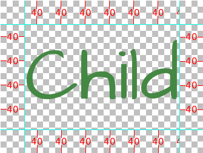

图形用户界面(GUI)定制指南 link
Ren'Py提供了一个有新意的、具有吸引力的图形用户界面系统（以下简称GUI）, 该系统允许用户进行个性化定制，在必要的时候甚至可以完全替代原有的界面。 这里展示了如何对GUI进行简单的和一般程度的定制。
如果希望进行更深层的高级定制，请参考以下文档： 样式文档 （包括 样式属性文档 以及 视屏和视屏语言 （包括 视屏操作，值和函数以及有特殊含义的视屏).
这意味着您要使用新版的Ren'Py GUI（包含在gui.rpy文件内）。 之前版本的GUI（使用screens.rpy文件的版本）将被作为GUI的高级定制配置文件。
简单的GUI定制 link
这里列举了几个简单的GUI定制方法，它们对几乎所有的视觉小说类游戏都适用。 这些定制方法的共同点在于，它们都不需要手动修改gui.rpy文件。 另外，尽管它们或多或少地改变了外观，但没有真正明显地修改GUI。
改变大小和颜色 link
最简单的操作就是修改GUI的大小和颜色。在你创建新工程时，Ren'Py会提供 一个设置向导，以选项的形式对GUI进行快速设置。而在创建之后，你也可以通过 点击"调整/更新GUI"按钮，来修改之前的选择。
当在编辑器中修改GUI时，Ren'Py会提示您选择仅在编辑器中实施改变，或者 更新gui.rpy文件。两种选择都会重写大部分图像文件，而重写gui.rpy文件将能够 摒除对该文件的修改。
因此，在其他的定制设置之前，你可能想要首先进行这种修改。
Ren'Py首先会开始对工程默认分辨率的设置，然后是主题颜色等。一旦你做出了 选择，它将会按照你的设置来更新GUI。
Options.rpy link
在options.rpy文件中，有几个变量适用于GUI代码。
config.name- 该字符串即是游戏的名称。 它将被用于窗口标题，以及其他在GUI中需要使用标题的地方。
gui.show_name- 如果设置为False，则游戏主菜单将不会显示游戏名称和版本号。 （如果有需要的话请修改，因为游戏名称就像被"烙"在主菜单图片上一样。）
config.version- 该字符串指定了游戏的版本号。它将在很多个地方展示。
gui.about- 在“游戏信息”视屏的附加说明文字。如果你需要多段说明，可以用\n\n来分割段落。
一个关于这些配置的例子：
define config.name = _('守旧中学')
define gui.show_name = True
define config.version = "1.0"
define gui.about = _("作者：PyTom\n\n中学背景由Mugenjohncel设计")
出于方便，在定义gui.about时也可以用三组引号的方式进行，此时应当特别留意行末的情况。例如：
define gui.about = _("""\
作者：PyTom
中学背景由Mugenjohncel设计""")
{kind=link}
{kind=link}
窗口图标 link
窗口图标是在运行程序时展示的图标（例如在Windows任务栏或是MacOS的停靠栏）
通过替换gui/window_icon.png可以改变窗口图标。
注意，这只会改变运行时展示的图标。要想改变程序的图标， 例如Windows中exe文件，或MacOS中应用的图标，请参考 构建发布包-特殊文件.
一般的GUI定制 link
接下来，我们会展示一般程度的（或者说是中级的）GUI定制。 在这种情况下，我们可以调整颜色、字体以及图片等游戏内容。 通常，在一般的定制下，视屏大都保持了相似性，按钮、滑块等也都在同样的位置。 当然，对视屏进行调整或者增加新的功能也都是可以的。
这些调整很多都通过对gui.rpy中的变量进行修改来实现。 例如，要想调整对话字号的大小，则可以寻找下面的行：
define gui.font_size = 22
然后对它的值进行修改，例如，将字号大小从22下调至20：
define gui.font_size = 20
注意，游戏中的默认值可能与本文档中的例子不同。默认值的大小，可能会随着 游戏选择不同的尺寸或颜色而改变，文件中列出的值仅作为广泛的GUI定制的一个示例。 最好搜索gui.rpy文件，并对特定的变量进行定义，例如"define gui.font_size"。
下面的这些调整，可能会部分或完全地影响图片文件。因此，仅在图片文件本身 被更新后，这些改变才会生效。这时可以通过在编辑器中点击"Change GUI"来 重新生成图片文件。（但是，请注意这样也会覆盖你之前已经调整过的图片文件。）
这种情况下，你也许会考虑直到游戏制作接近完成时，才对gui.rpy进行定制。 另外，旧版的gui.rpy文件可以在新版的Ren'Py中运行，但新版的gui.rpy文件可能 对旧版进行了一些内容的修正和补充。如果你定制的是较早版本的GUI，可能无法 体验到最新版的一些改进。
对话 link
有很多相对容易的定制方法可以用于改变对话展示给玩家的方式。 首先是调整文本框。
- gui/textbox.png
- 这个文件是文本窗口的背景图像，它作为say视屏的一部分来展示。 这个图片的宽度应当和游戏窗口相同，因为对话文本仅在中间60%进行展示， 而两侧各有20%的宽度作为边界。
另外，可以通过定制以下变量，以调整对话。
-
define
gui.text_color= "#402000" link 此变量设置对话文本的颜色。
-
define
gui.default_font= "ArchitectsDaughter.ttf" link 此变量设置对话文本，以及菜单、输入框等游戏内文本的字体。 注意，所选的字体文件应当包含于游戏内。
友情提示：请注意字体的版权，即使是可以免费个人使用的字体，也不代表它是可以免费商用的。 如果您将要把作品进行发布，请留意这一点。
-
define
gui.text_size= 33 link 此变量设置对话文本的字号大小。 可以根据所选的字体以及文本占据的空间，对此变量进行调整。
-
define
gui.name_text_size= 45 link 此变量设置角色名的字号大小。
默认情况下，角色名标签使用重点色。这个颜色可以在定义角色时改变，例如：
define e = Character("Eileen", who_color="#104010")

一个文本框图片的示例

使用文本框图片以及上面的几个变量，对对话进行定制的示例
选择菜单 link
选择视屏是为玩家展示选项的菜单。同样地，有相应的简单的定制方法来 调整选择视屏的展现方式。首先是两个图片文件：
- gui/button/choice_idle_background.png
- 这个图片是目前没有被选择的选项的背景图像。
- gui/button/choice_hover_background.png
- 这个图片是目前正在被选择的选项的背景图像。
默认情况下，选项文本在图像中央的75%进行展示。同样有一些变量可以 控制选项按钮中的文本。
这是目前没有被选择的选项的文字颜色。
-
define
gui.choice_text_hover_color= '#0066cc' link 这是目前正在被选择的选项的文字颜色。
在图片的尺寸无需调整的情况下，这些设置应该已经满足了简单的定制需求。 对于更加复杂的定制，请参考下面的内容。

文件gui/button/idle_background.png的示例。
{kind=link}
{kind=link}
覆层图像 link
我们同样支持覆层图像。它们被用于加深或减淡背景图像，来凸显按钮的位置， 或者增强其他用户交互内容的易读性。这些图像置于overlay目录中：
- gui/overlay/main_menu.png
- 此图片用于主菜单
- gui/overlay/game_menu.png
- 此图片用于游戏内菜单类视屏，包括载入、保存、设置、游戏信息、帮助页面等。 这个覆层可以用于特定的视屏，甚至可以在主菜单也应用它。
- gui/overlay/confirm.png
- 此图片用于确认视屏。通常是为了使背景变暗。
这里有几个覆层图像的例子，以及应用覆层图像后游戏效果的示例。
{kind=link}
文件gui/overlay/main_menu.png的示例。
{kind=link}
文件gui/overlay/game_menu.png的示例。
{kind=link}
{kind=link}
颜色，字体与字号 link
有很多变量可以用于调整颜色，字体与文本的字号大小。
这些变量通常应当被设置为形如"#rrggbb"的十六进制颜色码，类似web浏览器的颜色码。 例如，"#663399"表示的颜色是 紫色。 有很多在线工具可以用来生成HTML颜色代码，比如 这个。
除了gui.text_color, gui.choice_idle_color，以及gui.choice_hover_color和
之前文档里提到的变量，另外还有一些设置可以参考：
-
define
gui.accent_color= '#000060' link 这个重点色应用于GUI的很多地方，包括标题、标签等。
-
define
gui.idle_color= '#606060' link 这个颜色应用于未被选择或没有正在被选择的按钮。
-
define
gui.idle_small_color= '#404040' link 这个颜色应用于未被选中状态的小型文本（例如存档处的日期和名字，或者快捷菜单按 钮的文字等）。通常，这个颜色要比未被选中的普通文本的颜色更深或更浅一些，因为这些文本 的字号相比来说更小，使用突出的颜色可以增强可读性。
-
define
gui.hover_color= '#3284d6' link 这个颜色应用于GUI中正被选中的项目，包括文本按钮，以及滑块或 滚动条的移动标记（表示现在可移动的部分）等等。
-
define
gui.selected_color= '#555555' link 这个颜色应用于已被选中的按钮的文本。 （它的优先级高于上面的两个颜色设置。亦即，无论上面两个颜色设置情况如何， 当一个按钮处于已被选中的状态，它将显示这个颜色。）
-
define
gui.insensitive_color= '#8888887f' link 这个颜色应用于不可用按钮的文本。 （例如，当没有任何可以回滚的内容时，回滚按钮的文本将显示这个颜色。）
-
define
gui.interface_text_color= '#404040' link 这个颜色应用于游戏界面中的静态文本，例如帮助和游戏信息视屏的文本。
-
define
gui.muted_color= '#6080d0' link
-
define
gui.hover_muted_color= '#8080f0' link 哑色被用于滚动条或滑块的无值或不可见区域。（仅在生成图片时会用到， 并且直到图片被重新生成前，该修改不会生效。）
除了gui.default_font之外，下面的这些变量也能影响文本的字体。
这些字体文件也需要放在游戏目录中。
-
define
gui.interface_font= "ArchitectsDaughter.ttf" link 这个字体应用于用户界面元素的文本，例如主菜单、游戏内菜单，以及按钮等等。
-
define
gui.glyph_font= "DejaVuSans.ttf" link 这个字体应用于某些特定的字符，例如表示跳过的箭头形状。 DejaVuSans是一个用来表示这些字符的不错的默认字体，并且，通常来说这个字体 将自动内置于每个Ren'Py游戏当中。
除了gui.text_size和gui.name_text_size之外，下面的
变量也用于控制文本字号大小。
-
define
gui.interface_text_size= 36 link 这个字号应用于游戏中用户界面的静态文本，它也是游戏界面按钮文本的默认字号。
-
define
gui.label_text_size= 45 link 这个字号应用于游戏中用户界面的标签部分。
-
define
gui.notify_text_size= 24 link 这个字号应用于提示文本。
-
define
gui.title_text_size= 75 link 这个字号应用于游戏标题。
{kind=link}
边界 link
GUI中的很多组成部分，例如按钮、栏位等，都使用了用边界(Border)来设置的可伸缩背景。 在讨论如何定制按钮和栏位之前，我们会先描述它的原理。
边界在可显示对象的框架（Frame()）部分有涉及。
框架(Frame)应用于图像，并将它分为九个部分，包括四个角，四个侧边，以及中心部分。
四个角将保持相同的形状，左右两边可以纵向拉伸，上下两边可以横向拉伸，而
中心部分向四周拉伸。
一个边界对象确定了每一个边界的尺寸，顺序是左-上-右-下。所以如果一个图像是下面的情况：

那么它的边界设置就是：
Borders(40, 40, 40, 40)
比如，一种像这样的可能的情况：

当子对象(例如图中的Child)的尺寸发生变化时，背景的尺寸也会相应作出调整。
边界对象也可以设置内边距，并且内边距允许为负值。若为负值，则子对象将越过边界显示。 例如，将边界设定为下面的值：
Borders(40, 40, 40, 40, -20, -20, -20, -20)
则可以使得子对象越过边界。注意，如果以这样的形式越界显示，整体的图像将变小， 因为此时边界本身占据的空间也变小了。

除了拉伸，边界也可以进行平铺。这可以借助一系列的变量来实现。 平铺的效果如下：
诚然，这些示例图像有些简陋，但是足以说明其原理。 在实际中，系统可以生成更加美观的结果。当使用框架对象作为用户界面窗口的背景时， 就是这样的情况。
这些框架窗口可以通过两种方式定制。一种方式是改变背景图像文件：
- gui/frame.png
- 这个图像被用作框架窗口的背景。
另一种方式是定制一系列的变量：
-
define
gui.frame_borders= Borders(15, 15, 15, 15) link 这个边界应用于框架窗口。
-
define
gui.confirm_frame_borders= Borders(60, 60, 60, 60) link 这个边界应用于确认视屏的框架。
-
define
gui.frame_tile= True link 如果设定为True，则确认视屏的侧边和中心部分将使用平铺填充。 如果设定为False，则使用拉伸填充。
{kind=link}
图像文件gui/frame.png的一个示例。
{kind=link}
Buttons link
The Ren'Py user interface includes a large number of buttons, buttons that come in different sizes and that are used for different purposes. The various kinds of buttons are:
- button
- A basic button. Used for navigation within the user interface.
- choice_button
- A button used for choices in the in-game menu.
- quick_button
- A button, displayed in-game, that is intended to allow quick access to the game menu.
- navigation_button
- A button used in main and game menu for navigation between screens, and to start the game.
- page_button
- A button used to switch between pages on the load and save screens.
- slot_button
- Buttons that represent file slots, and contain a thumbnail, the save time, and an optional save name. These are described in more detail below.
- radio_button
- A button used for multiple-choice preferences on the preferences screen.
- check_button
- A button used for toggleable preferences on the preferences screen.
- test_button
- A button used to test audio playback on the preferences screen. This should be the same height as a horizontal slider.
- help_button
- A button used to select what kind of help the player wants.
- confirm_button
- A button used on the confirm screen to select yes or no.
- nvl_button
- A button used for an NVL-mode menu choice.
The following image files are used to customize button backgrounds, if they exist.
- gui/button/idle_background.png
- The background image used by buttons that are not focused.
- gui/button/hover_background.png
- The background image used by buttons that are focused.
- gui/button/selected_idle_background.png
- The background image used by buttons that are selected but not focused. This is optional, and is used in preference to idle_background.png if it exists.
- gui/button/selected_hover_background.png
- The background image used by buttons that are selected but not focused. This is optional, and is used in preference to hover_background.png if it exists.
More specific backgrounds can be given for each kind of button, by prefixing it with the kind. For example, gui/button/check_idle_background.png is used as the background of check buttons that are not focused.
Four image files are used as foreground decorations on radio and check buttons, to indicate if the option is chosen or not.
- gui/button/check_foreground.png, gui/button/radio_foreground.png
- These images are used when a check or radio button is not selected.
- gui/button/check_selected_foreground.png, gui/button/radio_selected_foreground.png
- These images are used when a check or radio button is selected.
The following variables set various properties of buttons:
The width and height of a button, in pixels. If None, the size is automatically determined based on the size of the text inside a button, and the borders given below.
The borders surrounding a button, in left, top, right, bottom order.
If true, the sides and center of the button background are tiled to increase or decrease their size. If false, the sides and center are scaled.
The font and size of the button text.
The color of the button text in various states.
The horizontal alignment of the button text. 0.0 is left-aligned, 0.5 is centered, and 1.0 is right-aligned.
These variables can be prefixed with the button kind to configure a
property for a particular kind of button. For example,
gui.choice_button_text_idle_color configures the color of
an idle choice button.
For example, we customize these variables in our sample game.
Increases the width of navigation buttons.
Increases the width of radio and check button borders, leaving extra space on the left for the check mark.
Here's an example of how the play screen can be customized.

An example gui/button/idle_background.png image.
An example gui/button/hover_background.png image.
An image that can be used as gui/button/check_foreground.png and gui/button/radio_foreground.png.

An image that can be used as gui/button/check_selected_foreground.png and gui/button/radio_selected_foreground.png.
{kind=link}
Save Slot Buttons link
The load and save screens use slot buttons, which are buttons that present a thumbnail and information about when the file was saved. The following variables are quite useful when it comes to customizing the size of the save slots.
The width and height of the save slot button.
The borders applied to each save slot.
-
define
config.thumbnail_width= 384 link
-
define
config.thumbnail_height= 216 link The width and height of the save thumbnails. Note that these live in the config namespace, not the gui namespace. These do not take effect until the file is saved and loaded.
-
define
gui.file_slot_cols= 3 link
-
define
gui.file_slot_rows= 2 link The number of columns and rows in the grid of save slots.
There are the background images used for save slots.
- gui/button/slot_idle_background.png
- The image used for the background of save slots that are not focused.
- gui/button/slot_hover_background.png
- The image used for the background of save slots that arefocused.
Putting those to use, we get:

An example gui/button/slot_idle_background.png image.

An example gui/button/slot/slot_hover_background.png image.
The save screen after applying the customizations given in this section.
Sliders link
Sliders are a type of bar that is used in the preferences screen to allow the player to adjust preference with a large number of values. By default, the gui only uses horizontal sliders, but in-game code may also use vertical sliders.
Sliders are customized with the following images:
- gui/slider/horizontal_idle_bar.png, gui/slider/horizontal_hover_bar.png, gui/slider/vertical_idle_bar.png, gui/slider/vertical_hover_bar.png
- Images used for vertical and idle bar backgrounds in idle and hover states.
- gui/slider/horizontal_idle_thumb.png, gui/slider/horizontal_hover_thumb.png, gui/slider/vertical_idle_thumb.png, gui/slider/vertical_hover_thumb.png
- Images used for the thumb - the movable part of the bar.
The following variables are also used:
-
define
gui.slider_size= 64 link The height of horizontal sliders, and width of vertical sliders.
-
define
gui.slider_tile= True link If true, the frame containing the bar of a slider is tiled. If False, if it scaled.
-
define
gui.slider_borders= Borders(6, 6, 6, 6) link
-
define
gui.vslider_borders= Borders(6, 6, 6, 6) link The borders that are used with the Frame containing the bar image.
Here's an example of how we customize the horizontal slider.

An example gui/slider/horizontal_idle_bar.png image.

An example gui/slider/horizontal_hover_bar.png image.
An example gui/slider/horizontal_idle_thumb.png image.

An example gui/slider/horizontal_hover_thumb.png image.
{kind=link}
Scrollbars link
Scrollbars are bars that are used to scroll viewports. In the gui, the most obvious place a scrollbar is used is the history screen, but vertical scrollbars can be used on other screens as well.
Sliders are customized with the following images:
- gui/scrollbar/horizontal_idle_bar.png, gui/scrollbar/horizontal_hover_bar.png, gui/scrollbar/vertical_idle_bar.png, gui/scrollbar/vertical_hover_bar.png
- Images used for vertical and idle bar backgrounds in idle and hover states.
- gui/scrollbar/horizontal_idle_thumb.png, gui/scrollbar/horizontal_hover_thumb.png, gui/scrollbar/vertical_idle_thumb.png, gui/scrollbar/vertical_hover_thumb.png
- Images used for the thumb - the movable part of the bar.
The following variables are also used:
-
define
gui.scrollbar_size= 24 link The height of horizontal scrollbars, and width of vertical scrollbars.
-
define
gui.scrollbar_tile= True link If true, the frame containing the bar of a scrollbar is tiled. If False, if it scaled.
-
define
gui.scrollbar_borders= Borders(10, 6, 10, 6) link
-
define
gui.vscrollbar_borders= Borders(6, 10, 6, 10) link The borders that are used with the Frame containing the bar image.
-
define
gui.unscrollable= "hide" link This controls what to do if the bar is unscrollable. "hide" hides the bar, while None keeps it shown.
Here's an example of how we customize the vertical scrollbar.
{kind=link}

An example gui/scrollbar/vertical_hover_bar.png image.

An example gui/scrollbar/vertical_idle_thumb.png image.

An example gui/scrollbar/vertical_hover_thumb.png image.
{kind=link}
Bars link
Plain old bars are used to display a number to the player. They're not used in the gui, but can be used in creator-defined screens.
A bar can customized by editing the following images:
- gui/bar/left.png, gui/bar/bottom.png
- Images that are used for the filled section of horizontal and vertical bars.
- gui/bar/right.pbg, gui/bar/top.png
- Images that are used for the filled section of horizontal and vertical bars.
There are also the usual variables that control bars:
-
define
gui.bar_size= 64 link The height of horizontal bars, and width of vertical bars.
-
define
gui.bar_tile= False link If true, the bar images are tiled. If false, the images are linearly scaled.
-
define
gui.bar_borders= Borders(10, 10, 10, 10) link
-
define
gui.vbar_borders= Borders(10, 10, 10, 10) link The borders that are used with the Frames containing the bar images.
Here's an example of how we customize horizontal bars.
{kind=link}
{kind=link}
{kind=link}
Skip and Notify link
The skip and notify screens both display frames with messages in them. Both use custom frame background images:
- gui/skip.png
- The background of the skip indicator.
- gui/notify.png
- The background of the notify screen.
The variables that control these are:
-
define
gui.skip_frame_borders= Borders(24, 8, 75, 8) link The borders of the frame that is used by the skip screen.
-
define
gui.notify_frame_borders= Borders(24, 8, 60, 8) link The borders of the frame that is used by the notify screen.
-
define
gui.skip_ypos= 15 link The vertical position of the skip indicator, in pixels from the top of the window.
-
define
gui.notify_ypos= 68 link The vertical position of the notify message, in pixels from the top of the window.
Here is an example of customizing the skip and notify screens.

An example gui/skip.png image.

An example gui/notify.png image.
These skip and notify screens in action.
Dialogue, Continued link
In addition to the simple customizations given above, there are a number of ways to control how dialogue is presented to the player.
Textbox link
The textbox (or window) is the window the dialogue is displayed in. In addition to changing gui/textbox.png, the following variables control how the textbox is displayed.
Name and Namebox link
The character's name is placed inside a frame that uses gui/namebox.png as it's background. In addition, there are a number of variables that control the presentation of the name. The namebox is only show if the speaking character has a name (an empty name, like " ", counts).
-
define
gui.name_xpos= 360 link
-
define
gui.name_ypos= 0 link The horizontal and vertical positions of the name and namebox. These are usually a number of pixels from the left or top side of the textbox. Setting a variable to 0.5 centers the name in the textbox (see below). These numbers can also be negative - for example, setting gui.name_ypos to -22 causes it to be places 22 pixels above the top of the textbox.
-
define
gui.name_xalign= 0.0 link The horizontal alignment of the character's name. This can be 0.0 for left- aligned, 0.5 for centered, and 1.0 for right-aligned. (It's almost always 0.0 or 0.5) This is used for both the position of the namebox relative to gui.name_xpos, and to select the side of of the namebox that is aligned with xpos.
-
define
gui.namebox_width= None link
-
define
gui.namebox_height= None link
-
define
gui.namebox_borders= Borders(5, 5, 5, 5) link
-
define
gui.namebox_tile= False link These variables control the display of the frame containing the namebox.
Text link
-
define
gui.text_xpos= 402 link
-
define
gui.text_ypos= 75 link The horizontal and vertical positions of the actual dialogue. These are usually a number of pixels from the left or top side of the textbox. Setting a variable to 0.5 centers the dialogue in the textbox (see below).
-
define
gui.text_width= 1116 link This variable gives the maximum width of a line of dialogue, in pixels. When dialogue reaches this width, it will be wrapped by Ren'Py.
-
define
gui.text_xalign= 0.0 link The horizontal alignment of dialogue text. 0.0 is left aligned, 0.5 is centered, and 1.0 is right-aligned.
Examples link
To center the character's name, use:
define gui.name_xpos = 0.5
define gui.name_xalign = 0.5
To center dialogue text, use:
define gui.text_xpos = 0.5
define gui.text_xalign = 1.0
Our example game uses this code to customize the centered namebox:
define gui.namebox_width = 300
define gui.name_ypos = -22
define gui.namebox_borders = Borders(15, 7, 15, 7)
define gui.namebox_tile = True
An example gui/namebox.png image.
{kind=link}
History link
There are a few variables that control the way the history screen is displayed.
-
define
config.history_length= 250 link The number of blocks of dialogue Ren'Py will keep at history.
-
define
gui.history_height= 210 link The height of a history entry, in pixels. This can be None to allow the height of a history entry to vary at the cost of performance - config.history_length may need to be lowered significantly when this is None.
-
define
gui.history_name_xpos= 0.5 link
-
define
gui.history_text_xpos= 0.5 link The horizontal positions of the name label and dialogue text. These can be a number of pixels from the left side of the history entry, or 0.5 to center.
-
define
gui.history_name_ypos= 0 link
-
define
gui.history_text_ypos= 60 link The vertical positions of the name label and dialogue text, relative to the top of a history entry, in pixels.
-
define
gui.history_name_width= 225 link
-
define
gui.history_text_width= 1110 link The width of the name label and dialogue text, in pixels.
-
define
gui.history_name_xalign= 0.5 link
-
define
gui.history_text_xalign= 0.5 link This controls the alignment of text and the side of the text that is aligned with xpos. 0.0 is left-aligned, 0.5 is center-aligned, 1.0 is right-aligned.

The history screen customized with the settings given above.
NVL link
The nvl screen displays NVL-mode dialogue. There are a number of ways it can be customized. The first is to customize the NVL-mode background image:
- gui/nvl.png
- The background image used in NVL-mode. This should be the same size as the game window.
There are also a number of variables that are used to customize the way nvl-mode text is displayed.
-
define
gui.nvl_borders= Borders(0, 15, 0, 30) link The borders around the background of the NVL-mode. Since the background is not a frame, this is only used to pad out the NVL-mode to prevent it from pressing up against the sides of the screen.
-
define
gui.nvl_height= 173 link The height of a single NVL-mode entry. Setting this to a fixed height makes it possible to have NVL-mode without paging, showing a fixed number of entries at once. Setting this to None allows entries to be of a variable size.
-
define
gui.nvl_spacing= 15 link The spacing beween entries when gui.nvl_height is None, and the spacing between NVL-mode menu buttons.
-
define
gui.nvl_name_xpos= 0.5 link
-
define
gui.nvl_text_xpos= 0.5 link
-
define
gui.nvl_thought_xpos= 0.5 link The positioning of character names, dialogue text, and thought/narration text, relative to the left side of the entry. This can be a number of pixels, or 0.5 to represent the center of the entry.
-
define
gui.nvl_name_xalign= 0.5 link
-
define
gui.nvl_text_xalign= 0.5 link
-
define
gui.nvl_thought_xalign= 0.5 link The alignment of the text. This controls both the alignment of the text, and the side of the text that is placed at xpos. This can be 0.0 for left, 0.5 for center, and 1.0 for right.
-
define
gui.nvl_name_ypos= 0 link
-
define
gui.nvl_text_ypos= 60 link
-
define
gui.nvl_thought_ypos= 0 link The position of character names, dialogue text, and thought/narration text, relative to the top of the entry. This should be a number of pixels from the top.
-
define
gui.nvl_name_width= 740 link
-
define
gui.nvl_text_width= 740 link
-
define
gui.nvl_thought_width= 740 link The width of each kind of text, in pixels.
The position and alignment of NVL-mode menu buttons.
Ren'Py does not use NVL-mode by default. It must be invoked using NVL-mode characters, and by defining a few variables in script.rpy.
define e = Character("Eileen", kind=nvl)
define narrator = nvl_narrator
define menu = nvl_menu
Here's an example of the NVL screen customized with the code above.

An example gui/nvl.png image.
{kind=link}
Translation and GUI Variables link
The gui namespace is special, in that it is saved after the init phase, but before any translate python blocks are run. This makes it possible to change any gui variable in a translate python block to accomodate a second language. For example, the following code change the default text font and size.
- translate japanese python:
- gui.default_font = "MTLc3m.ttf" gui.text_size = 24
There is one issue that translators need to be aware of, and that is that in some places in gui.rpy, one variable is assigned the value of another. For example, the default gui.rpy has:
define gui.interface_font = "DejaVuSans.ttf"
and later on:
define gui.button_text_font = gui.interface_font
Since both of these statements run before any translate block runs, both variables need to be changed.
translate japanese python::
define gui.interface_font = "MTLc3m.ttf"
define gui.button_text_font = "MTLc3m.ttf"
If the second statement was missing, DejaVuSans would still be used.
Advanced Customization link
More advanced customization is possible by customizing screens.rpy, up to and including deleting it entirely and replacing it with your own code. Here are a few places to get started.
Styles link
Styles and style properties control how displayables are displayed. To find out what style a displayable is using, put the mouse over it and type shift+I. This invokes the style inspector, which shows style names. Once the style name is known, a style statement can be used to customize it.
For example, say we've lost our minds writing gui documentation, and want to add a bright red outline to the dialogue text. We can hover the text and press shift+I to find out the style used is named say_dialogue. We can then add (to the end of screens.rpy, or somewhere in options.rpy) the style statement:
style say_dialogue:
outlines [ (1, "#f00", 0, 0 ) ]
A huge number of customizations are possible using style statements.
Screens - Click to Continue link
A screen we expect to be commonly added is the click to continue screen. This is a screen that is shown when text finishes displaying. Here's a simple example:
screen ctc():
frame:
at ctc_appear
xalign .99
yalign .99
text _("(click to continue)"):
size 18
transform ctc_appear:
alpha 0.0
pause 5.0
linear 0.5 alpha 1.0
This particular ctc screen uses a transform to show the frame after 5 seconds. It's a good idea to delay CTC animations for several seconds, to give Ren'Py time to predict and load images.
Total GUI Replacement link
Advanced creators can replace some or all of screens.rpy in its entirely.
When doing so, some or all of the code in gui.rpy may become redundant.
It's probably a good idea to call gui.init() to reset styles - but after
that, a creator can do whatever they want. It usually makes sense to include
some or all of the special screens, to make sure
players can have access to all the functionality Ren'Py provides.
Python Functions link
There are some Python functions that support gui code.
Given a kind of button, returns a dictionary giving standard style properties for that button. This sets:
background- As described below.
padding- To gui.kind_borders.padding (if it exists).
xsize- To gui.kind_width (if it exists).
ysize- To gui.kind_height (if it exists).
(Note that if kind is the string "nvl_button", this will look for the gui.nvl_button_background variable.)
The background is a frame that takes its background picture from the first existing one of:
- gui/button/kind_[prefix_].background.png
- gui/button/[prefix_].background.png
If a gui variables named gui.kind_borders exists, it's used. Otherwise,
gui.button_bordersis used. If gui.kind_tile exists, it determines if the borders are tiled, elsegui.button_tilecontrols tiling.For what [prefix_] means, check out the :ref:`style prefix search <style-prefix-search> documentation.
Given a kind of button, returns a dictionary giving standard style properties for that button. This currently sets:
font- To gui.kind_text_font, if it exists.
size- To gui.kind_text_size, if it exists.
xalign- To gui.kind_text_xalign, if it exists.
text_align- To gui.kind_text_xalign, if it exists.
layout- To "subtitle" if gui.kind_text_xalign is greater than zero and less than one.
There are also a number of variables that set the text
colorstyle property:- insensitive_color
- To gui.kind_text_insensitive_color, if it exists.
- idle_color
- To gui.kind_text_idle_color, if it exists.
- hover_color
- To gui.kind_text_hover_color, if it exists.
- selected_color
- To gui.kind_text_selected_color, if it exists.
-
gui.init(width, height) link 初始化GUI。
- width
- 默认窗口的宽度。
- height
- 默认窗口的高度。